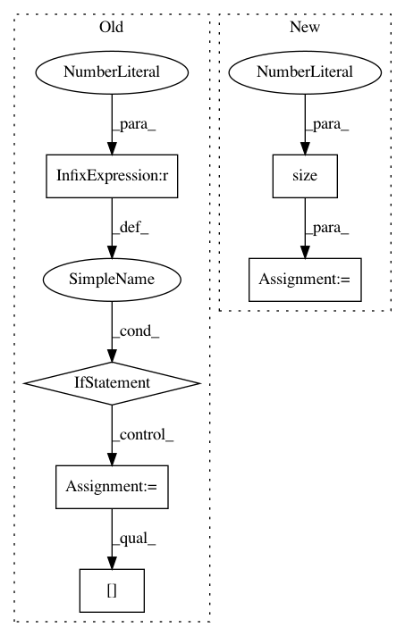

e60669c5aa467d5c11a508c01b37c4ed8e352fa6,torch_geometric/nn/conv/supergat_conv.py,SuperGATConv,forward,#SuperGATConv#Any#Any#Any#Any#,159
Before Change
if neg_edge_index is None:
neg_edge_index = self.negative_sampling(edge_index, N, batch)
if self.edge_sample_ratio < 1.0:
pos_edge_index = self.sample_pos_edges(edge_index)
else:
pos_edge_index = edge_index
att_with_neg_edges = self._get_att_logits_with_neg_edges(
x=x,
pos_edge_index=pos_edge_index,
neg_edge_index=neg_edge_index,
) // [E + neg_E, heads]
// X, Y for the self-supervised task
self.att_with_neg_edges = att_with_neg_edges
num_neg_edges = att_with_neg_edges.size(0)
att_label = torch.zeros(num_neg_edges).float().to(x.device)
att_label[:pos_edge_index.size(1)] = 1.
self.att_label = att_label
if self.concat is True:
After Change
if neg_edge_index is None:
neg_edge_index = self.negative_sampling(edge_index, N, batch)
neg_att = self.get_attention(
edge_index_i=neg_edge_index[1],
x_i=x[neg_edge_index[1]],
x_j=x[neg_edge_index[0]],
num_nodes=x.size(0),
return_logits=True,
)
self.att_x = torch.cat([pos_att, neg_att], dim=0)
self.att_y = self.att_x.new_zeros(self.att_x.size(0))
self.att_y[:pos_edge_index.size(1)] = 1.
In pattern: SUPERPATTERN
Frequency: 3
Non-data size: 6
Instances
Project Name: rusty1s/pytorch_geometric
Commit Name: e60669c5aa467d5c11a508c01b37c4ed8e352fa6
Time: 2021-02-15
Author: matthias.fey@tu-dortmund.de
File Name: torch_geometric/nn/conv/supergat_conv.py
Class Name: SuperGATConv
Method Name: forward
Project Name: rusty1s/pytorch_geometric
Commit Name: d8a075668b6e9cdf4c08f6c7285e5c7d2fbf5332
Time: 2017-10-17
Author: matthias.fey@tu-dortmund.de
File Name: torch_geometric/graph/geometry.py
Class Name:
Method Name: edges_from_faces
Project Name: lanpa/tensorboardX
Commit Name: 4debe684b9332a0fee78065f9d506c7119568d06
Time: 2017-08-15
Author: 178844@studenti.unimore.it
File Name: tensorboard/embedding.py
Class Name:
Method Name: make_sprite